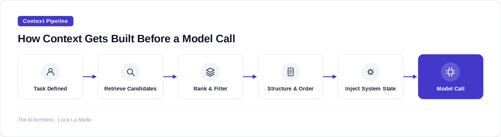

How you structure, select, and sequence information for a long-context model matters more than almost any other architectural decision.
October 5, 2026
There is a persistent fantasy that long-context models solve the context problem. They don't — they relocate it. When you could only fit 4,000 tokens into a window, the constraint was obvious and engineers took it seriously. Now that you can stuff 200,000 tokens in, people do exactly that, then wonder why the model's answers feel vague, why it misses details buried in the middle, why costs are ballooning. The window got bigger; the thinking about what to put in it didn't keep pace.
Context engineering is the discipline of deciding what information a model sees, in what form, in what order, and at what level of detail — for a given task, at a given moment. It is not prompt engineering, though prompts are part of it. It is not RAG, though retrieval is one tool. It is the full architecture of the information environment you construct around a model call. Get it right and you get consistent, accurate, cheap outputs. Get it wrong and no amount of model capability will save you.
The first thing to understand is that long-context models are not equally attentive across the full window. There is substantial empirical evidence — and any practitioner who has run evals knows this intuitively — that models perform better on information placed near the beginning or end of a context, and worse on information buried in the middle. This is sometimes called the lost-in-the-middle problem, and it has real consequences. If you are building a document QA system and you concatenate twenty PDFs in whatever order they come off the filesystem, you are not doing context engineering. You are hoping the model gets lucky.
The second thing to understand is that irrelevant content is not neutral. Every token that isn't useful to the task is a token that dilutes the signal. Models can and do get distracted by tangential information. A customer support agent that gets the full CRM history of an account when it only needs the last three interactions will sometimes anchor on old, irrelevant complaints. Shorter, sharper context almost always beats longer, comprehensive context — provided the shorter version actually contains what the model needs. That proviso is doing a lot of work, and it's where most of the real engineering effort goes.

Retrieval is the most common first step, but ranking and filtering are where most teams underinvest. Embedding similarity gives you a rough relevance signal; it does not give you the right set of chunks for a complex reasoning task. A question like "what changed in our refund policy between Q1 and Q3?" requires temporal reasoning across multiple documents — a pure vector search will surface chunks that mention refunds, but not necessarily in the right order or with the right surrounding context to make the comparison meaningful. Hybrid retrieval (dense + sparse), metadata filtering, and sometimes a cheap LLM reranking pass are all legitimate tools. The point is that what comes out of retrieval is raw material, not finished context.
Structuring and ordering matter more than most engineers expect. I use explicit section headers inside the context window — not for aesthetics, but because they give the model reliable anchors. If I'm giving a model a contract to analyze alongside a set of regulatory requirements, I will label each section clearly: CONTRACT TEXT, APPLICABLE REGULATIONS, YOUR TASK. I put the task last. This is deliberate: the model reads the supporting material first, then encounters the question with that material fresh. For very long documents I will sometimes put a short summary of the document at the top, then the full text below — the summary primes attention, the full text provides the evidence. This is not a trick; it is information architecture.
For agentic workloads, context engineering gets more complicated because the window evolves over time. Every tool call result, every sub-agent response, every intermediate reasoning step is a candidate for inclusion — and the window fills up fast. The two failure modes I see most often are context bloat (keeping everything, running out of space or degrading quality) and context amnesia (summarizing too aggressively, losing details the model needs later). The right answer is usually selective retention: decide up front which classes of information are ephemeral (tool call scaffolding, intermediate steps) and which are durable (user intent, key facts extracted, decisions made), and manage them differently. Ephemeral content gets summarized or dropped; durable content stays verbatim or gets promoted to a structured memory store that gets re-injected when relevant.
The rule I apply before every long-context build
Before I finalize any context pipeline for a client, I run what I call a necessity audit: for every category of content going into the window, I have to answer "what specifically goes wrong if this is absent?" If I can't answer that concretely, the content doesn't go in. It sounds obvious, but it forces you to be honest about how much of what you're including is habit or defensiveness rather than genuine signal. On three separate enterprise projects this year, the audit cut context size by 40–60% with no measurable quality loss — and significant cost reduction.
anthropics/claude-cookbooks — Long-context and context-management patterns (PDF uploads, sub-agents).
Inspired by Quoting Matthew Green (Simon Willison)